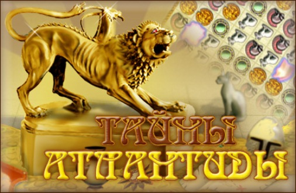

Войцеховский Алим Игоревич "ТАЙНЫ АТЛАНТИДЫ"

Об автореВойцеховский Алим Игоревич — действительный член Российской Академии космонавтики им. К.Э. Циолковского, член Президиума Федерации космонавтики России, кандидат технических наук, лауреат Государственной премии СССР, званий “Заслуженный машиностроитель Российской Федерации” и “Ветеран космонавтики России”, является автором многих книг и брошюр, посвященных проблемам мировой и отечественной космонавтики, а также загадочным и таинственным явлениям в природе и жизни людей.
Его публикации об атлантологии, изданные во многих печатных органах России, помимо общих принципов и различных версий о легендарной Атлантиде, содержат гипотезу автора о причинах и времени гибели этого загадочного острова-материка.
Автор рассматривает “атлантическую” версию, говорящую о существовании в Атлантическом океане острова, названного древнегреческим мыслителем Платоном — Атлантидой, и предлагает оригинальную гипотезу его последующего исчезновения, построенную на основе анализа многочисленных легенд и мифов, обширных исторических и современных научных материалов.
Эта гипотеза связывает гибель человеческой “працивилизации” со временем пролета возле Земли в XII тысячелетии до н. э. кометы Галлея, с произошедшей в связи с этим на нашей планете глобальной катастрофой, с фактом строительства в Древнем Египте почти в это же самое время пирамидного комплекса в Гизе. Автор делает выводы о существовании на планете 15–17 тысячелетий назад высокоразвитой человеческой цивилизации…
Имели ли какое-то отношение к этой архидревнейшей цивилизации “пришельцы из космоса”?.. Чтобы выяснить и разобраться, что в данном случае является плодом фантазии, а что — реальными фактами, в книге кратко рассматриваются и эти непростые проблемы.
Глава 1. Мифы, легенды и Атлантида.
Гиперборея: миф или действительность?.
Глава 2. Предложения, версии, гипотезы.
Фестский диск — реликвия из Атлантиды?.
Глава 3. Факты здравого смысла.
Угри ищут Атлантиду в Саргассовом море?.
«Лунная фотография» и «каменная карта» Атлантиды.
Существует ли подводная Атлантида?.
Глава 4. Комета Галлея, Тунгусский метеорит и… Атлантида.
Сближения кометы Галлея с Землей.
Глава 5. В поисках истины.
Что было причиной гибели Атлантиды?.
Глава 6. Из глубины тысячелетий.